I enjoy poetry and creative writing as ways of expressing thoughts, emotions and ideas. Writing allows me to explore different perspectives, put my experiences into words.
My Poetry
Here are some of my original poems:
I've Lost My Glow
A reflection on creativity, perfectionism and finding your inspiration again.
The Journey
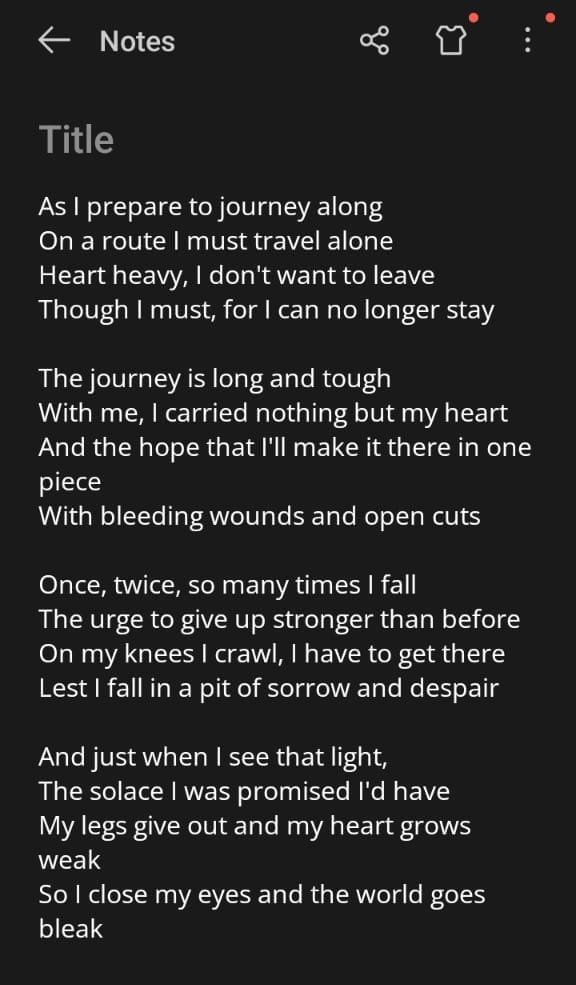
A poem about perseverance, hardship and the struggles along life's journey.
If We Never Met
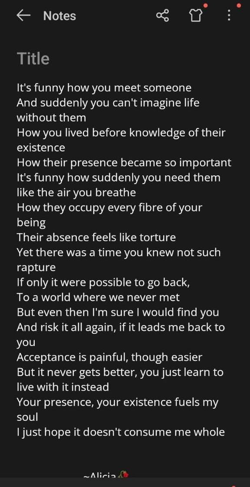
An exploration of attachment, longing and the difficulty of letting go.
A Glimpse Into My Journal
A little look into my personal writing space, where I put my thoughts and ideas into words.
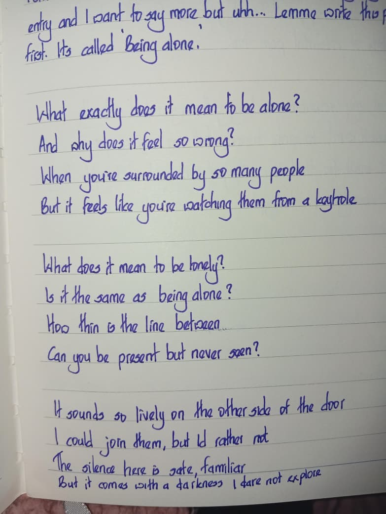
Reading
A Glimpse Into My Reading
Reading is another hobby I enjoy, especially mystery, thriller and suspense stories. One of my current reads is A Good Girl's Guide to Murder.
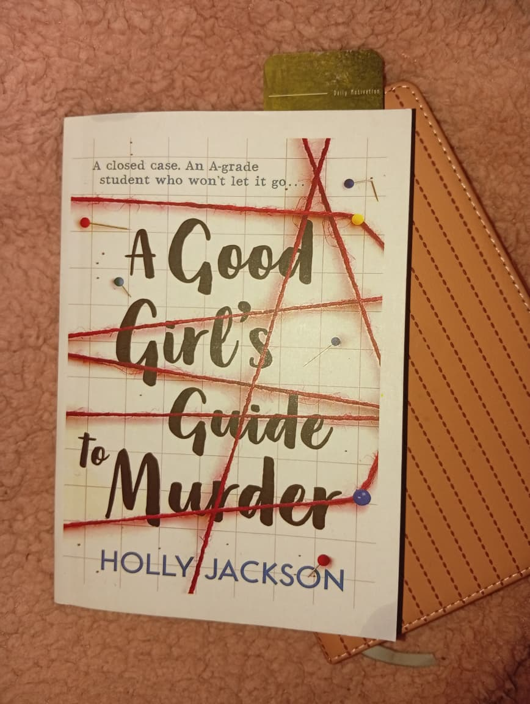
One of my current reads: A Good Girl's Guide to Murder.
Crocheting
I enjoy crocheting and creating different items using yarn and a crochet hook. I like being able to turn simple materials into something unique and handmade.
Here are some of the projects I've worked on:
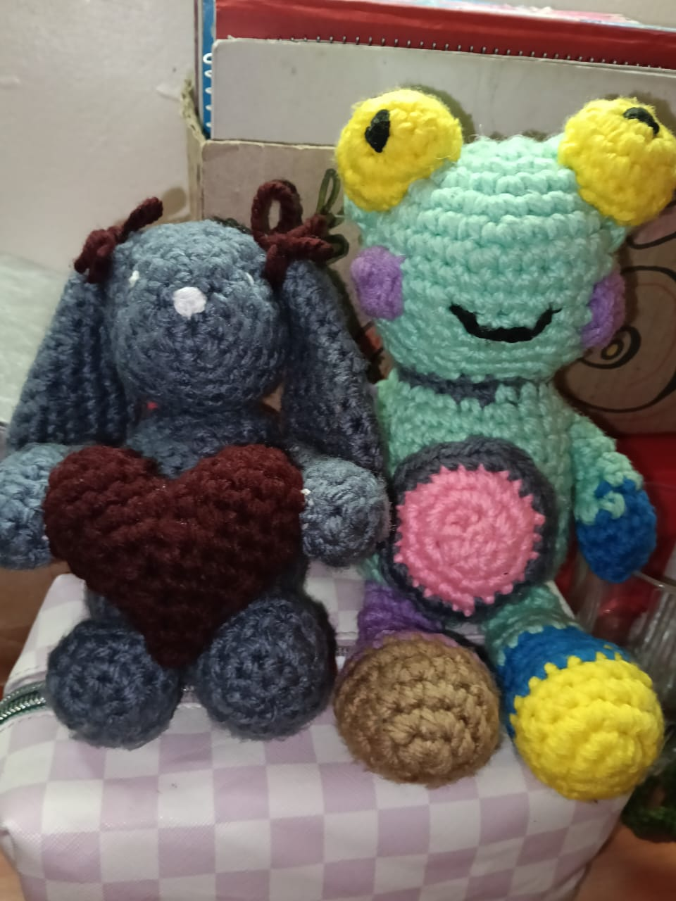
Handmade crochet gifts created for a friend.
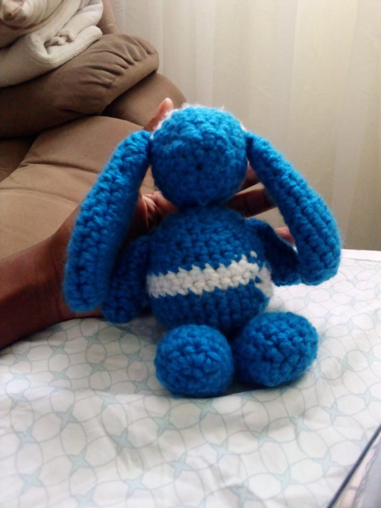
A handmade crochet bunny.
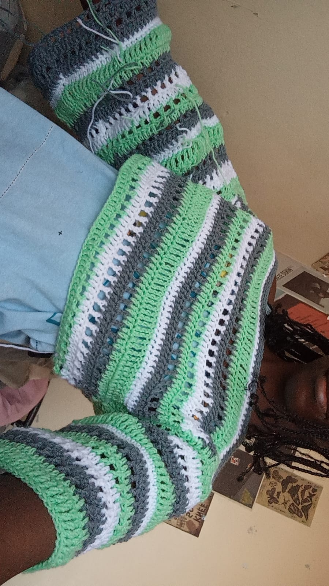
A crocheted sweater made by hand.
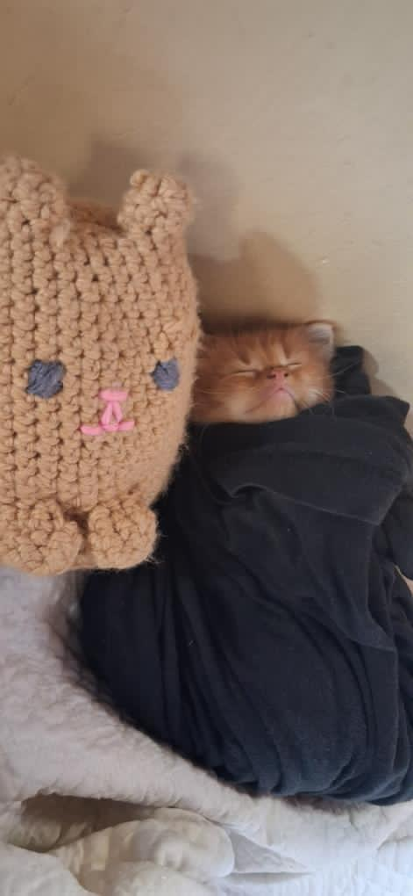
A little crocheted cat loaf.
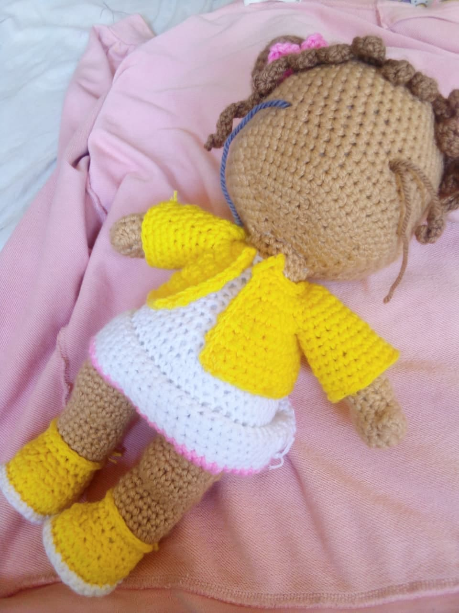
A handmade crocheted doll.
Other Interests
Music
I enjoy listening to music and discovering different
artists and sounds. Music is one of the ways I relax
and connect with different moods and emotions.
Gaming
I enjoy playing The Sims 4, creating characters, building households and developing stories around their lives. One of my favourite creations is Shiloh, whose childhood and family moments I've captured in the screenshots below.
A Few of My Favourite Sims
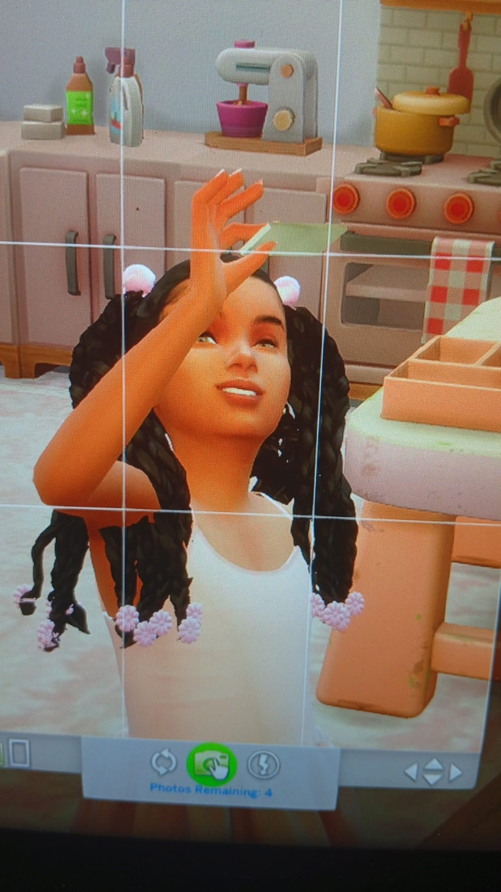
Shiloh during her childhood, exploring her curiosity through play.
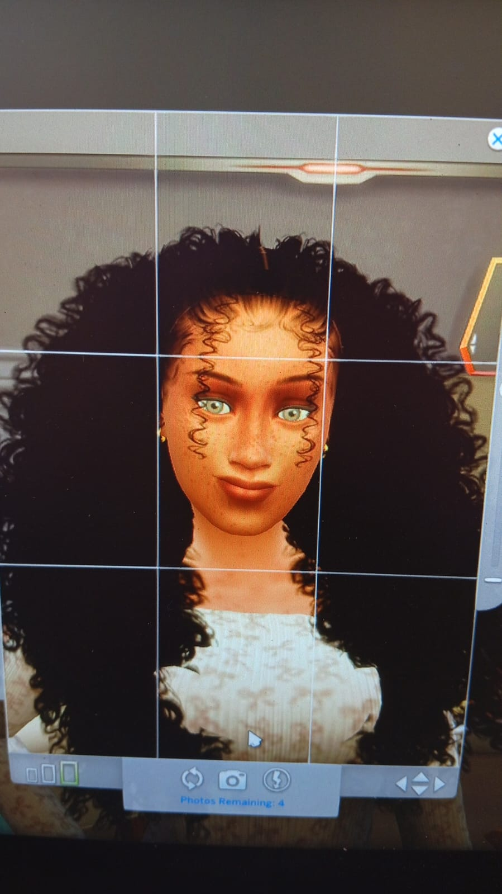
Shiloh as she grew older.
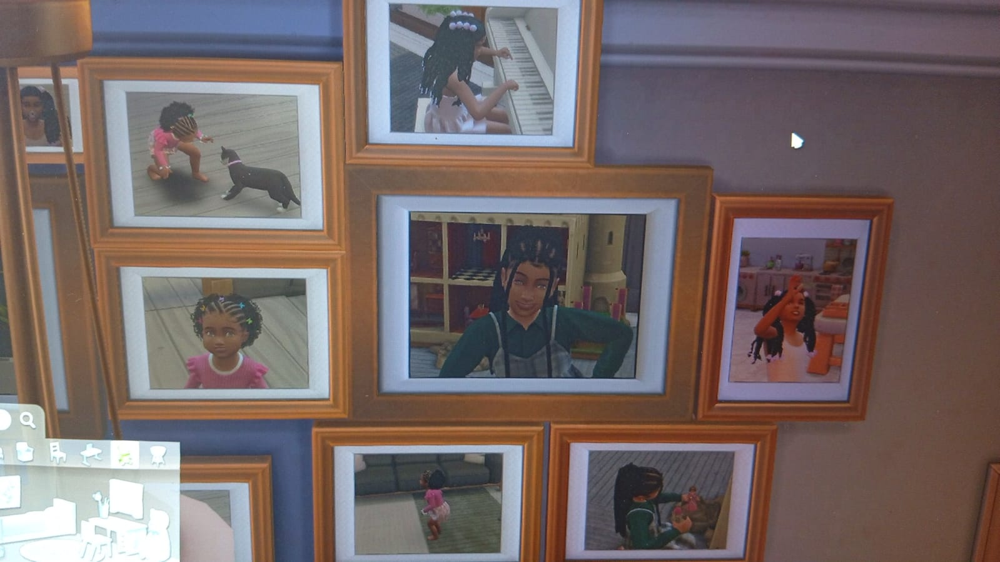
A collection of family memories capturing different moments from Shiloh's life.
Psychology
I am interested in understanding human behaviour,
personality, emotions and the way people think.